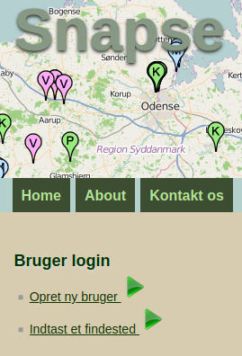
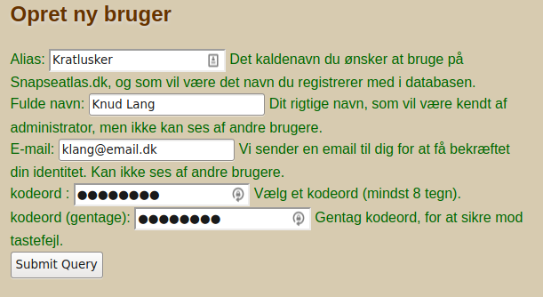
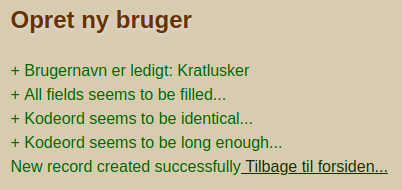

Ny bruger

For at kunne indraportere til Snapseatlas skal du være oprettet som bruger. Det er gratis og tager kun kort tid. Du kan gøre det her på siden, og din konto virker med det samme. Du skal vælge et brugernavn og kodeord, og vi beder dig oplyse fulde navn og e-mail adresse. Vi sender senere en e-mail for at checke om e-mail adressen er korrekt.
Den eneste oplysning som bliver synlig for andre brugere er det brugernavn du vælger. Hverken din e-mail, ellers andre personlige informationer, bliver synlige for andre. Dog kan administrator se din e-mail adresse i databasen.
Indtast info

Du skal udfylde skemaet som vist her, og trykke submit nederst.
Du skal også være opmærksom på at forbindelsen til Snapseatlas ikke er krypteret, og din kommunikation kan i teorien opsnappes, hvis nogen overvåger din internet trafik. Det gælder både når du opretter bruger, og hver gang du fremover anvender disse informationer til at logge ind.
Derfor anbefaler vi at du ikke bruger samme brugernavn eller kodeord på Snapseatlas og andre steder.
Færdig ...

Det er det hele - Nu er du oprettet som bruger og kan indraportere til Snapseatlas.
Hver gang du melder data ind til databasen skal du indtaste brugernavn og kodeord, og alle dine indregistreringer bliver forsynet med dit brugernavn. På den måde kan alle se på en information at den kommer fra dig.
En anden fordel ved brugerregistrering er at det potentielt modvirker 'hærværk'. Skulle nogen få den idé at indtaste forkerte informationer vil det være tydeligt hvem der er den skyldige, og det vil desuden være let at slette alle informationer fra en bestemt bruger. Vi håber selvfølgeligt at der også heri ligger en præventiv virkning, så det aldrig bliver aktuelt...